Introduction
L'atelier ne demande aucune compétence en programmation. Chaque groupe formule ses intentions par écrit ; GitHub Copilot, un agent de programmation assisté par intelligence artificielle, écrit le motif du groupe en conséquence ; le résultat est évalué dans l'aperçu, une application web qui affiche la trame sur la palette et simule son impression par le robot.
↺ ajustements : « @copilot … », autant d'itérations que nécessaire
Chaque groupe dispose de son propre dossier de motifs, et Copilot n'est autorisé à modifier que ce dossier. Le moteur de calcul des croisements, la commande du robot et l'application elle-même sont protégés et relèvent de l'enseignant : les modifications d'un groupe ne peuvent pas affecter le travail des autres groupes.
Partie 1 · Préalable à la première séance
Trois démarches sont à effectuer dès réception de ce guide : la vérification du statut étudiant par GitHub peut demander plusieurs jours.
Rendez-vous sur github.com/signup et suivez la procédure. Un compte existant peut être conservé.
prenom-nom) : il devra être communiqué à l'enseignant.Cette offre gratuite réservée aux étudiants comprend GitHub Copilot, indispensable pour l'atelier.
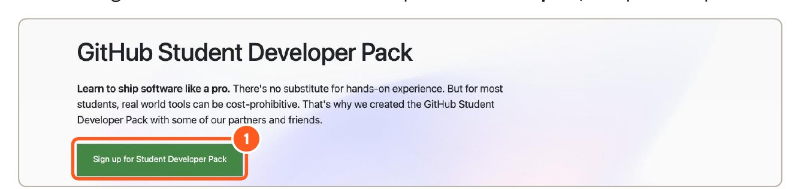
La disponibilité de Copilot sur chaque compte sera vérifiée collectivement lors de la première séance.
Partie 2
L'aperçu est une application web qui ne nécessite aucune installation. Ouvrez etienne-mosnier.github.io/trame-beton dans un navigateur récent (Chrome, Firefox, Safari). Le premier chargement demande une dizaine de secondes, le temps de démarrer l'environnement de calcul et de charger le robot. Le panneau se lit de haut en bas, dans l'ordre du travail : 01 Tracé de base, 02 Motif, 03 Béton, 04 Vue, 05 Robot, 06 Exports, 07 Bilan.
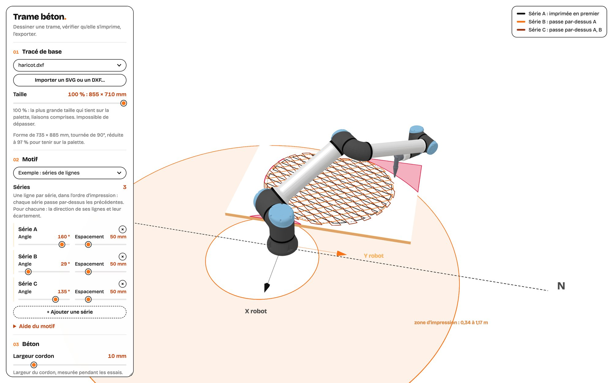
1 2 3 4 5 6 7 8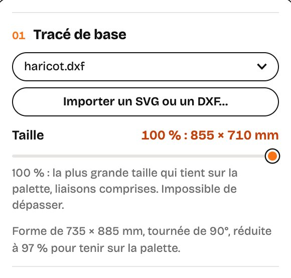
1 2 3 4On commence par le contour qui délimite la trame.
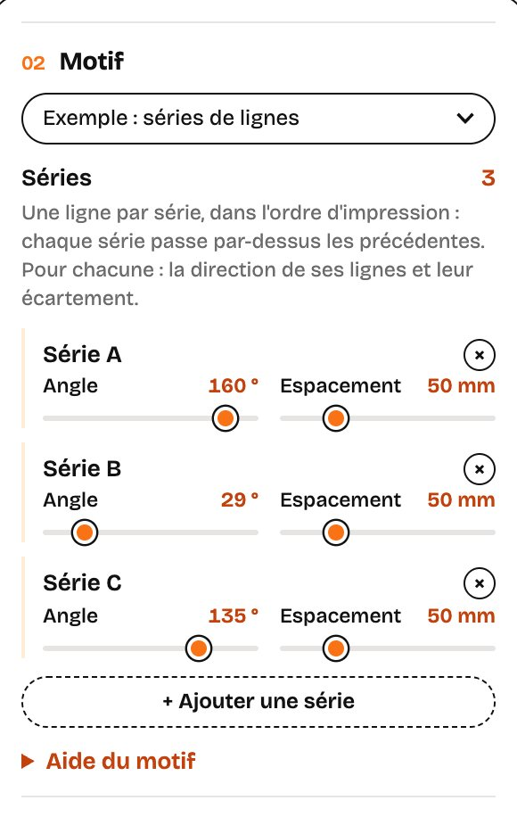
1 2 3 4 5La liste Motif regroupe les motifs par groupe. Le motif Exemple (séries de lignes droites) montre seulement ce qu'est un motif : celui d'un groupe peut reposer sur une logique entièrement différente (spirale, cellules, courbes attirées par des points…).
Certains motifs comportent des points (boules noires cerclées d'orange) manipulables directement dans la vue : double-clic sur la palette pour en ajouter, clic puis glisser les flèches pour en déplacer un, double-clic sur un point (ou touche Suppr) pour le supprimer.
Recommandation : les curseurs ne sont pas mémorisés. Consignez les valeurs retenues : elles pourront être reprises dans une demande à Copilot, par exemple pour en faire les valeurs par défaut.
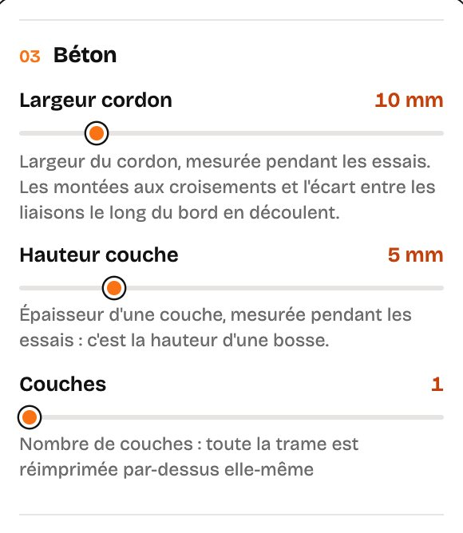
1 2 3Ces valeurs dépendent du matériau réel : elles ne sont à modifier qu'en concertation avec les étudiants ingénieurs. Élargir le cordon écarte les liaisons : la forme se réduit d'elle-même pour rester sur la palette.
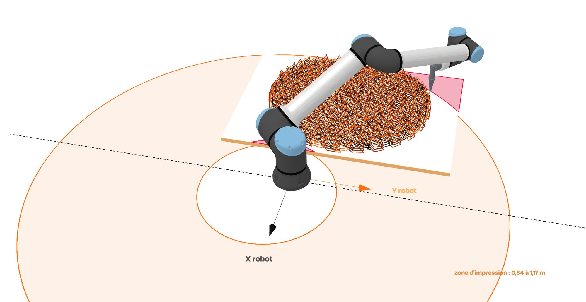
1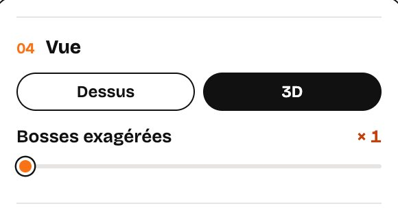
1 2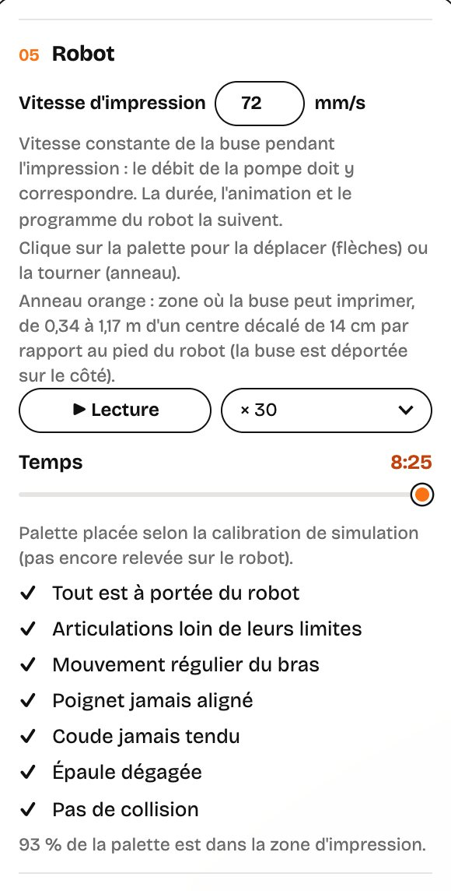
1 2 3 4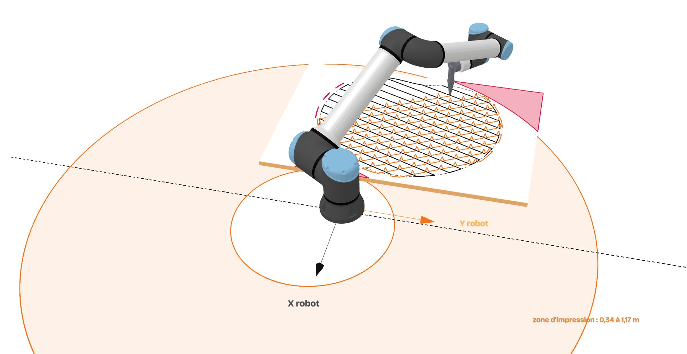
1 2 3 4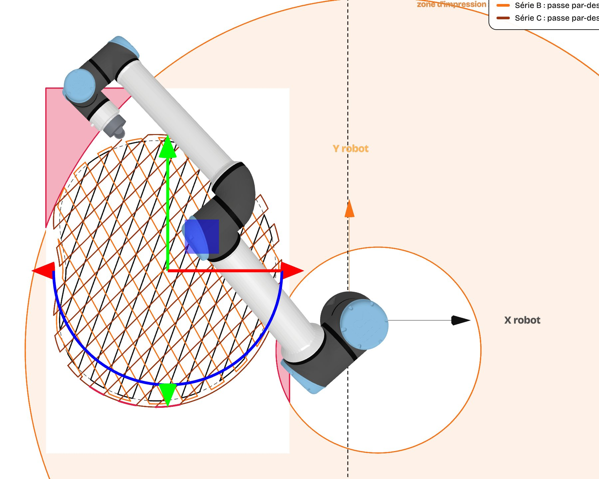
1 2 3 4Un clic sur la palette fait apparaître ses poignées ; un clic dans le vide les cache.
Au lâcher, la zone rouge, les contrôles et le robot sont recalculés. Cette manipulation sert à étudier la portée du robot et n'affecte que l'affichage : la position réelle de la palette est fixée par l'enseignant.
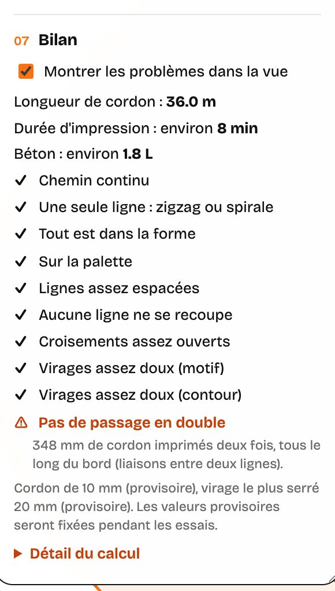
1 2 3 4| Chemin continu / une seule ligne | la buse imprime un seul trait, en zigzag ou en spirale |
|---|---|
| Dans la forme, sur la palette | rien ne dépasse |
| Lignes assez espacées | au moins 2 × la largeur du cordon dans une série |
| Aucune ligne ne se recoupe | une ligne ne repasse pas sur elle-même |
| Croisements assez ouverts | pas de croisement à moins de 20° |
| Virages assez doux | pas de virage trop serré ni d'angle vif |
| Passage en double | endroits imprimés deux fois (souvent le long du bord) |
Un point d'attention (⚠) n'est pas nécessairement bloquant : il est examiné avec les étudiants ingénieurs au regard du matériau et du levage de la bâche. Une erreur (✕, en rouge) doit être corrigée avant l'impression. La correction est demandée à Copilot (partie 3).
Partie 3
La demande est formulée dans une issue assignée à Copilot. Celui-ci propose une pull request accompagnée d'un aperçu ; le groupe l'évalue, demande si nécessaire des ajustements, puis procède à la fusion.
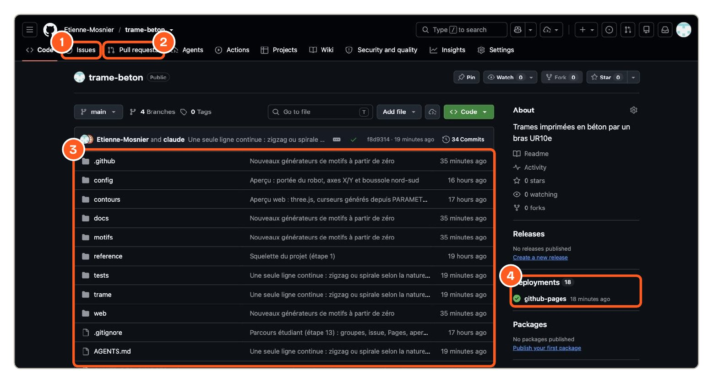
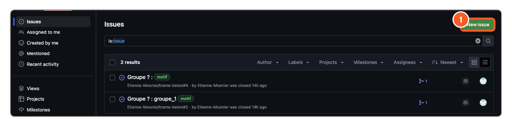
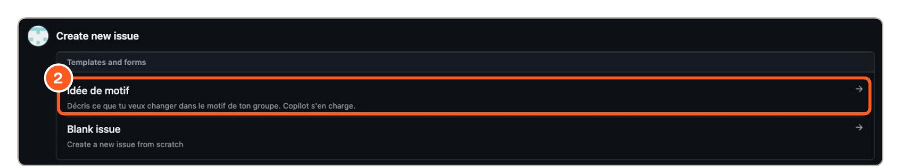
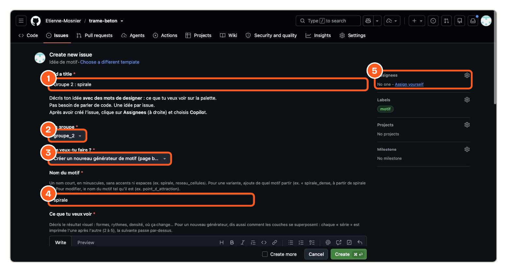
spirale, reseau_cellules). Pour une modification, le nom exact du motif.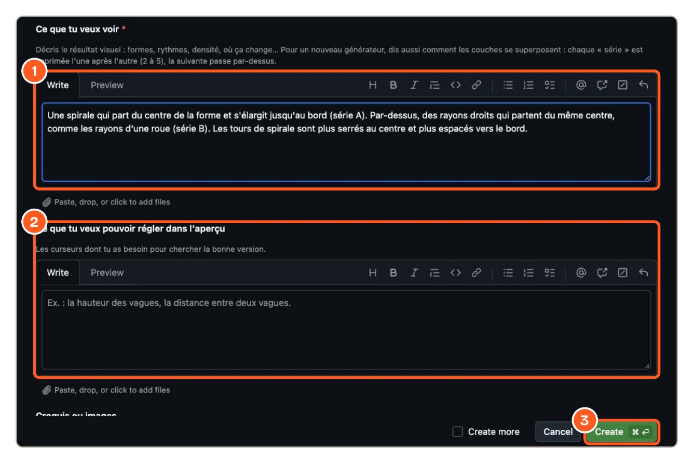
Copilot travaille uniquement à partir du texte de la demande. La formulation relève du vocabulaire du design et non de la programmation, mais elle doit décrire avec précision le résultat attendu.
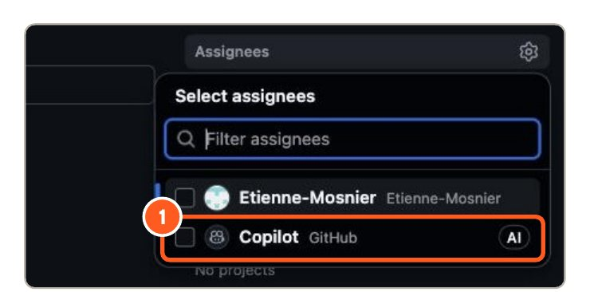
Dans la colonne de droite, ouvrez le menu Assignees (roue dentée) et cochez 1Copilot. L'assignation peut aussi être faite après la création de l'issue, au même emplacement.
Validez ensuite avec Create. Copilot signale la prise en compte par une réaction (icône « yeux »), puis commence le travail.
Le Student Developer Pack n'est probablement pas encore validé, ou l'invitation au projet n'a pas été acceptée. Créez l'issue et informez l'enseignant.
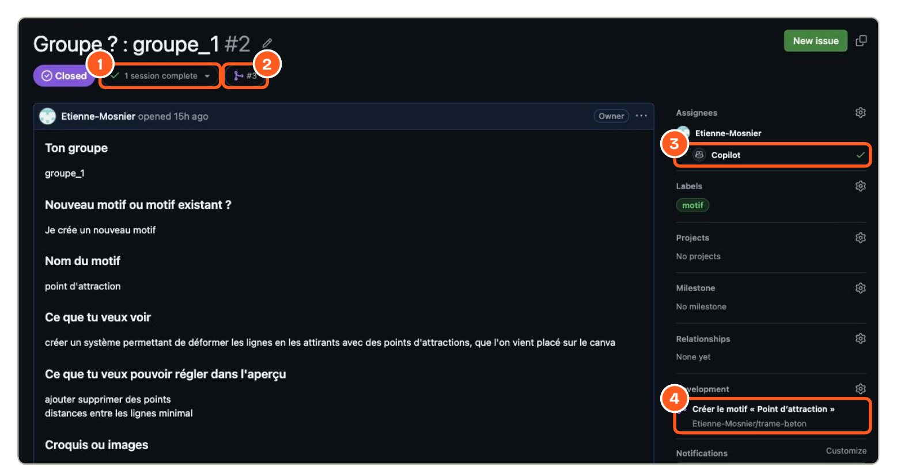
Le traitement demande en général de quelques minutes à un quart d'heure. GitHub adresse une notification lorsque la pull request est prête.
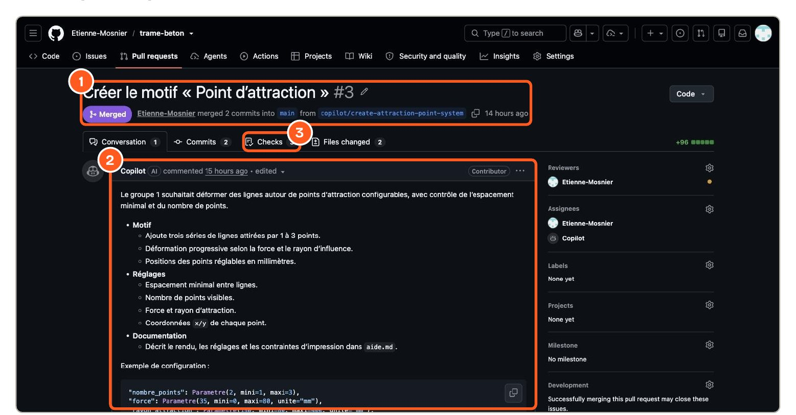
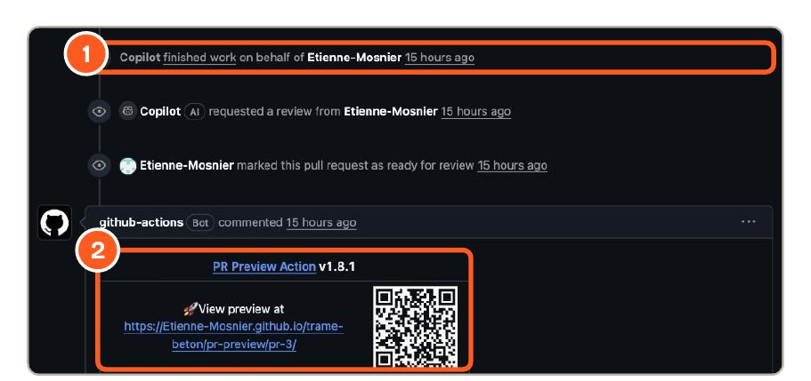
Si le lien renvoie une erreur, la publication est encore en cours : patientez une à deux minutes. Pour comparer avec la version en vigueur, gardez l'aperçu principal ouvert dans un autre onglet.
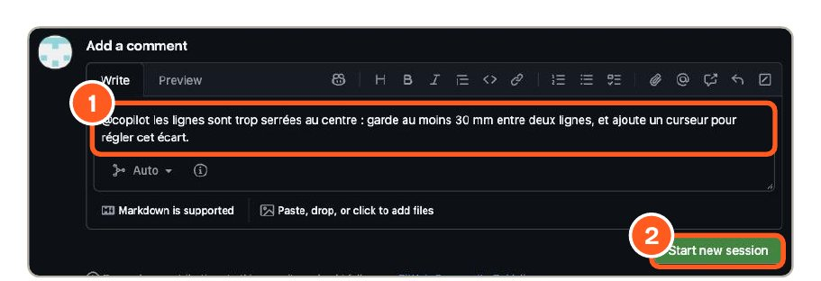
En bas de la pull request, rédigez un commentaire commençant par @copilot 1, puis validez 2.
Copilot reprend le travail dans la même pull request et l'aperçu est mis à jour.
Décrivez l'écart entre le résultat observé et le résultat attendu, chiffré si possible (« réduire de moitié la hauteur des ondulations », « espacement minimal de 30 mm »). Une demande par commentaire.
Lorsque le résultat est satisfaisant et que les tests sont validés, sélectionnez Merge pull request, puis Confirm merge. Le motif est intégré à l'aperçu principal dans les minutes qui suivent.
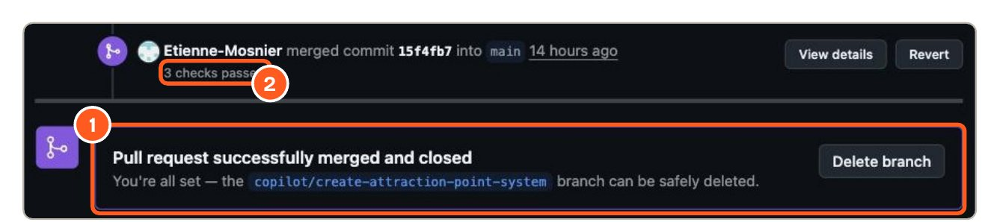
Partie 4
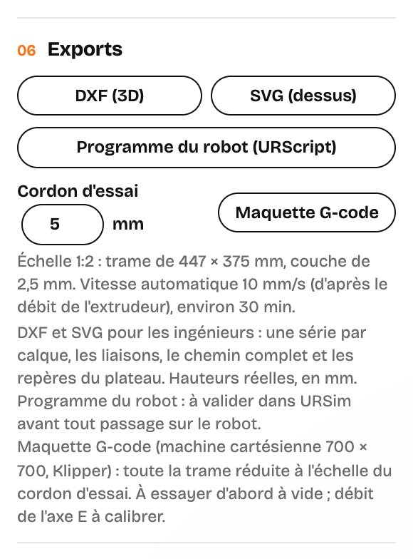
1 2 3 4 5Avant l'impression en béton, une trame peut être testée en céramique sur la machine cartésienne (plateau 700 × 700 mm, extrudeur à piston et tête malaxeuse). La maquette est la même trame réduite dans le rapport cordon d'essai / cordon final, en largeur, en longueur et en hauteur : espacements, bosses, couches et proportions du cordon sont conservés.
| Exemple | cordon final 20 × 5 mm, cordon d'essai 5 mm : échelle 1:4. Une palette de 1200 × 800 mm devient 300 × 200 mm ; le cordon d'essai fait 5 × 1,25 mm. |
|---|---|
| Vitesse | calculée automatiquement d'après le débit de l'extrudeur et la section du cordon d'essai : un cordon plus fin s'imprime plus vite. |
| Trop grand | si la maquette ne tient pas dans la machine, le bouton se grise : choisir un cordon d'essai plus fin. |
La maquette est lancée par l'enseignant, d'abord à vide puis avec la céramique, après calibration de l'extrusion.
Partie 5 · Pour aller plus loin
L'application reprend un algorithme conçu à l'origine dans Grasshopper. Cette partie s'adresse aux étudiants qui souhaitent explorer la définition, la modifier ou y prototyper un motif avant d'en demander l'intégration dans l'application.
betonrobot.ghx, fourni par l'enseignant. Le script Python du composant est aussi disponible seul dans le dépôt : reference/vagues_ghx.py.La définition est organisée en groupes colorés, qui se lisent de gauche à droite : de la géométrie de départ jusqu'aux fichiers destinés aux machines.
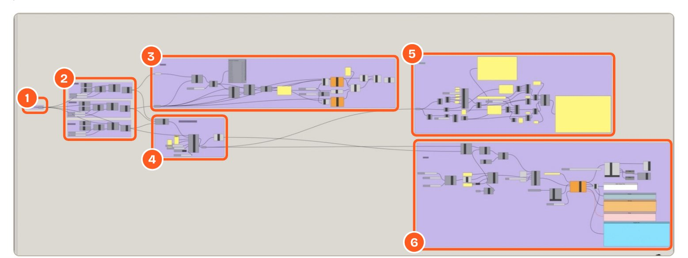
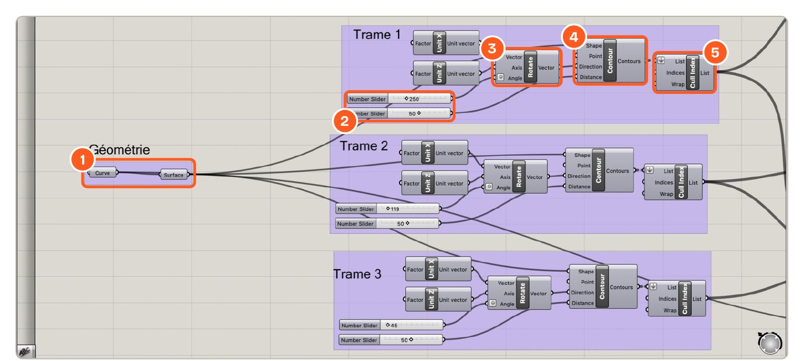
Pour définir le contour : dans Rhino, dessinez une courbe plane et fermée à l'échelle réelle, en millimètres ; dans Grasshopper, clic droit sur le paramètre Curve du groupe Géométrie, puis Set one Curve. La courbe n'étant pas enregistrée dans le fichier, l'opération est à refaire à chaque ouverture.
Dupliquez un groupe Trame, branchez sa sortie sur une nouvelle entrée du composant Entwine (groupe Composant python), puis ajoutez une valeur dans le panneau weights et, si la trame doit onduler, son numéro dans active. Toute courbe peut constituer une trame : arcs, spirales, décalages de contour, courbes dessinées dans Rhino.
Ce groupe construit les bosses sans script, pas à pas. Il permet de comprendre le principe géométrique que le composant Python automatise.
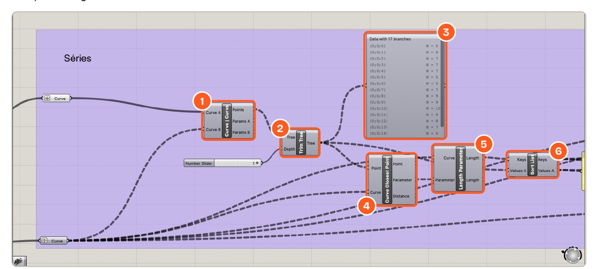
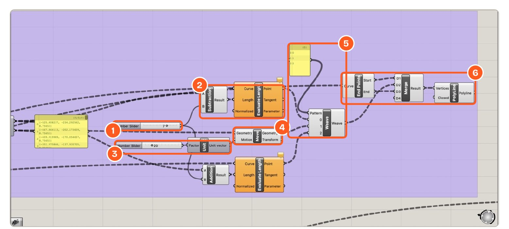
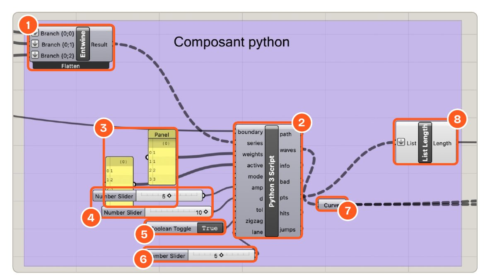
weights (poids des séries) et active (séries qui ondulent).amp (hauteur de bosse, 5 mm) et d (longueur de montée, 10 mm).zigzag : relie toutes les courbes en un seul chemin continu.lane (5 mm) : décalage des liaisons de chaque série le long du bord.| boundary · courbe | Contour fermé. Les séries sont découpées et seule la partie intérieure est conservée. |
|---|---|
| series · arbre de courbes | Sortie d'Entwine : une branche par série. |
| weights · 1, 1, 2, 3 | Poids de chaque série, dans l'ordre. Une valeur excédentaire est ignorée. |
| active · 1, 2, 3 | Séries qui ondulent, numérotées à partir de 0 (A = 0, B = 1, C = 2). Ici B et C ondulent, A reste à plat. |
| mode · vide (« own ») | Chaque série monte d'une couche au-dessus de ce qu'elle recouvre (empilement). Autres valeurs : « min », « max », « mul ». |
| Entrées facultatives | tol, fuse, res, link, route (« series », « chrono », « zigzag », « contour »), hop. |
L'application reprend ce composant et l'étend : hauteur et longueur des bosses déduites du cordon, couches
superposées, spirale pour les courbes fermées emboîtées. Branchez un Panel sur la sortie info :
la ligne « CONTRÔLE » donne les mêmes vérifications que le bilan de l'application.
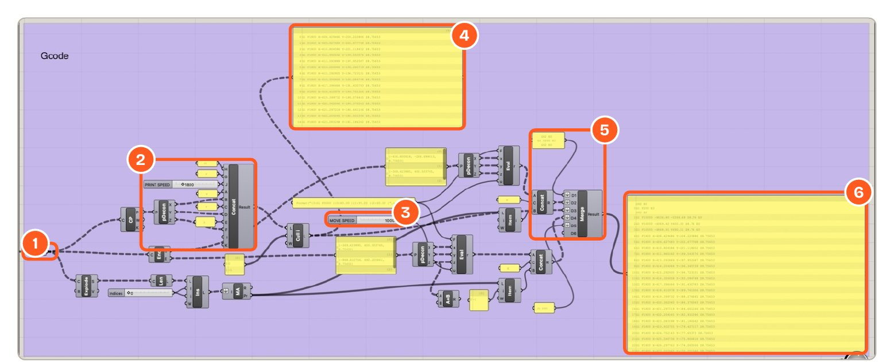
G1 F… X… Y… Z… (Concat).G92 E0 …) et fusion des blocs (Merge).Ce groupe produit une version G-code sans extrusion calculée. Pour la maquette céramique, utilisez l'export Maquette G-code de l'application (partie 4), qui réduit la trame à l'échelle du cordon et calcule l'extrusion.
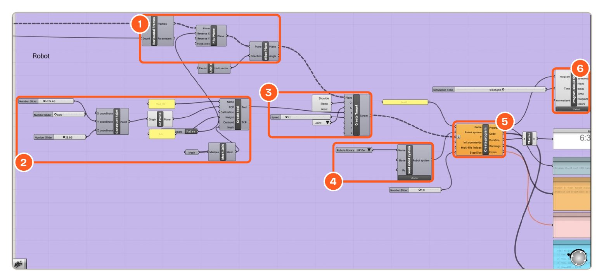
Cette chaîne a servi aux premiers essais et présente trois limites, corrigées dans l'application : arrêt du robot à chaque point (cordon irrégulier), sommets des bosses écrêtés par le redécoupage à pas constant, et ni extrusion, ni approche, ni dégagement. Aucun programme issu de Grasshopper n'est exécuté sur le robot.
Seule la génération des trames est à décrire : le calcul des bosses, des couches, du chemin et des programmes est déjà assuré par l'application.
Annexe
| L'aperçu reste bloqué sur « Démarrage de Python… » | Patienter une trentaine de secondes, puis recharger. À défaut, utiliser un autre navigateur récent (Chrome, Firefox). |
|---|---|
| L'aperçu n'affiche pas la dernière version | Recharger en forçant : Cmd + Maj + R (Mac) ou Ctrl + Maj + R (PC), ou ouvrir une fenêtre de navigation privée. |
| Le panneau gêne la vue | Le déplacer par son titre ou le réduire par son coin en bas à droite. |
| Le projet n'est pas accessible sur GitHub | L'invitation n'a pas été acceptée ou a expiré (7 jours). Demander une nouvelle invitation. |
| Copilot n'apparaît pas dans « Assignees » | Le Student Developer Pack n'est pas encore validé. Créer l'issue et informer l'enseignant. |
| Aucune réaction de Copilot | Vérifier l'assignation, patienter quelques minutes, puis informer l'enseignant. |
| Le lien « PR Preview » renvoie une erreur 404 | La publication est en cours : patienter une à deux minutes. Vérifier si le bouton « Approve and run workflows » doit être activé. |
| Un test est en échec (✗) | Consulter le compte rendu de Copilot ou l'onglet « Checks », puis demander une correction avec @copilot. Ne pas fusionner. |
| « Une seule ligne : zigzag ou spirale » en alerte | Des courbes s'arrêtent au milieu de la forme ou des courbes fermées sont côte à côte : demander qu'elles traversent la forme, ou qu'elles soient emboîtées. |
| Copilot signale qu'une modification de l'interface ou du moteur est nécessaire | Ces éléments relèvent de l'enseignant. Le signaler dans l'issue. |
| Le tracé importé ne produit aucun résultat | Vérifier que le fichier contient une forme fermée dessinée en millimètres, et lire le message sous le bouton d'import. |
| Le bouton « Maquette G-code » est grisé | La maquette ne tient pas dans la machine : choisir un cordon d'essai plus fin. |
| Le quota Copilot est atteint | Il est renouvelé chaque mois. Poursuivre avec le compte d'un autre membre du groupe et préparer les demandes suivantes par écrit. |
Aperçu : etienne-mosnier.github.io/trame-beton
Projet GitHub : github.com/Etienne-Mosnier/trame-beton
Student Developer Pack : education.github.com/pack